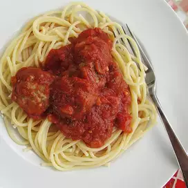

Spaghetti Sauce

Description
A simple and quick recipe for tomato sauce.
Ingredients
- 2 teaspoons of olive oil
- 1/2 small onion, chopped
- 2 green onions, chopped
- 2 teaspoons of crushed garlic
- 1 (28 ounce) can peeled and diced tomatoes
- 4 teaspoons dried basil
- 4 teaspoons dried oregano
- 1 teaspoon of white sugar
Steps
- Heat oil in a large saucepan over medium heat.
- Add onion, green onion, and garlic; cook until onions are translucent, 3 to 4 minutes.
- Stir in tomatoes, basil, oregano, and sugar.
- Bring to a boil, reduce heat to low, and simmer for 20 minutes.